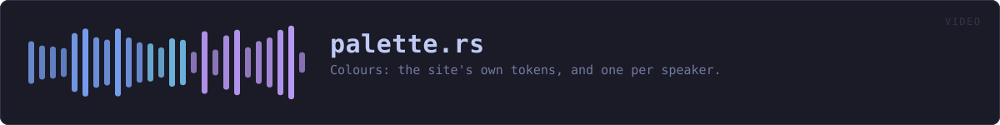

crates/veilvoice-video/src/palette.rs
veilvoice-video · 329 lines · read the source
Colours: the site's own tokens, and one per speaker.
One source of colour, cross-checked by a test
The hexes below are Tokyo Night, and they are the same ones website/css/themes.css declares. They are written out here rather than parsed at run time because a crate should not need the website to be on disk to draw a circle — and a test reads that stylesheet and fails if the two ever disagree, which is the same arrangement veilvoice-gui has had since the themes existed.
Ten speaker colours, ordered by measurement rather than by eye
Six of them are palette tokens. The other four are from the wider Tokyo Night set, chosen to sit between the tokens.
The order was first written down by looking at a hue wheel, and it was wrong: a test comparing every pair found a further-apart pair than the one put first. So the order is now computed rather than judged, by distance — the "redmean" approximation, which is the cheap standard stand-in for perceptual difference and weights green most because the eye does.
Slot 0 and slot 1 are the furthest-apart pair in the set, because two speakers is the common case. Every slot after that is the colour whose nearest neighbour among the ones already used is furthest away — a maximin order, so the table degrades gracefully: a recording with four people uses four colours chosen to be as separable as four can be, rather than the first four somebody listed.
Ten colours cannot all be far apart. Under this metric the furthest pair scores 507 and the closest pair anywhere in the set scores 63, and the closest pair is only ever reached by a recording with nine or ten people in it.
One colour is deliberately not a hue at all: the near-white foreground token, separated from every saturated colour by lightness — the axis that is still free once the wheel is full.
Colour is never the only signal
Somebody who cannot separate two of these needs the name, and the name is always drawn beside the circle and always in the subtitles. A player that showed only colours would be one about eight per cent of men could not use.
WHAT THIS FILE CONTAINS
329 lines defining 6 functions (6 public), 0 types and 6 constants. Everything below is read out of the source, so it cannot disagree with the code.
What happens when it runs. These are the ways in: public, and nothing else in this file calls them, so they are what an outside caller reaches first.
speakerline 81 — The colour for a speaker slot.distanceline 94 — How far apart two colours look, by the "redmean" approximation.
reachesrgbink_online 156 — Black or white, whichever is readable on background.
reachescontrast,luminance,rgb
WHAT CALLS WHAT
The functions this file defines, and the calls between them. An edge means the callee's name appears, called, inside the caller's body — a syntactic reading, not a type-resolved one.
The same graph as Mermaid source
%%{init: {"theme":"base","themeVariables":{"background":"#1a1b26","primaryColor":"#1f2335","primaryTextColor":"#c0caf5","primaryBorderColor":"#7aa2f7","secondaryColor":"#16161e","tertiaryColor":"#16161e","lineColor":"#737aa2","textColor":"#c0caf5","mainBkg":"#1f2335","nodeBorder":"#7aa2f7","clusterBkg":"#16161e","clusterBorder":"#2f3549","fontFamily":"ui-monospace, SFMono-Regular, Consolas, monospace","fontSize":"14px"}}}%%
flowchart TD
n_speaker(["speaker<br/>line 81"])
n_distance(["distance<br/>line 94"])
n_rgb["rgb<br/>line 111"]
n_luminance["luminance<br/>line 129"]
n_contrast["contrast<br/>line 145"]
n_ink_on(["ink_on<br/>line 156"])
n_contrast --> n_luminance
n_distance --> n_rgb
n_ink_on --> n_contrast
n_luminance --> n_rgb
click n_speaker href "https://github.com/tilas01/veilvoice/blob/main/crates/veilvoice-video/src/palette.rs#L81" "open the source"
click n_distance href "https://github.com/tilas01/veilvoice/blob/main/crates/veilvoice-video/src/palette.rs#L94" "open the source"
click n_rgb href "https://github.com/tilas01/veilvoice/blob/main/crates/veilvoice-video/src/palette.rs#L111" "open the source"
click n_luminance href "https://github.com/tilas01/veilvoice/blob/main/crates/veilvoice-video/src/palette.rs#L129" "open the source"
click n_contrast href "https://github.com/tilas01/veilvoice/blob/main/crates/veilvoice-video/src/palette.rs#L145" "open the source"
click n_ink_on href "https://github.com/tilas01/veilvoice/blob/main/crates/veilvoice-video/src/palette.rs#L156" "open the source"
classDef entry fill:#1f2335,stroke:#7aa2f7,color:#c0caf5
class n_speaker,n_distance,n_ink_on entry
classDef api fill:#1f2335,stroke:#7dcfff,color:#c0caf5
class n_rgb,n_luminance,n_contrast apiThis site loads no third-party script, so it cannot run Mermaid; the diagram above is the same nodes and edges drawn by the generator instead. GitHub renders the source below directly.
ITEMS
| Item | Line | Documentation |
|---|---|---|
BG pub const | 48 | The page background. |
BG_INSET pub const | 50 | A panel or inset behind the waveform. |
BORDER pub const | 52 | Hairlines and dividers. |
FG pub const | 54 | Body text. |
MUTED pub const | 56 | Secondary text. |
SPEAKERS pub const | 62 | The ten speaker colours, in the order slots are handed out. |
speaker pub fn | 81 | The colour for a speaker slot. |
distance pub fn | 94 | How far apart two colours look, by the "redmean" approximation. |
rgb pub fn | 111 | Parse #rrggbb into its three channels. |
luminance pub fn | 129 | Relative luminance, as WCAG defines it, from 0.0 to 1.0. |
contrast pub fn | 145 | The contrast ratio between two colours, from 1.0 to 21.0. |
ink_on pub fn | 156 | Black or white, whichever is readable on background. |